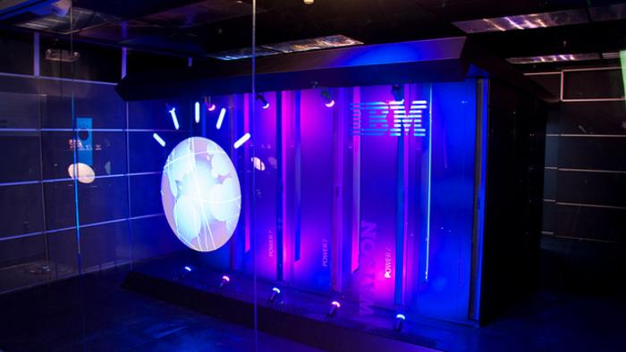
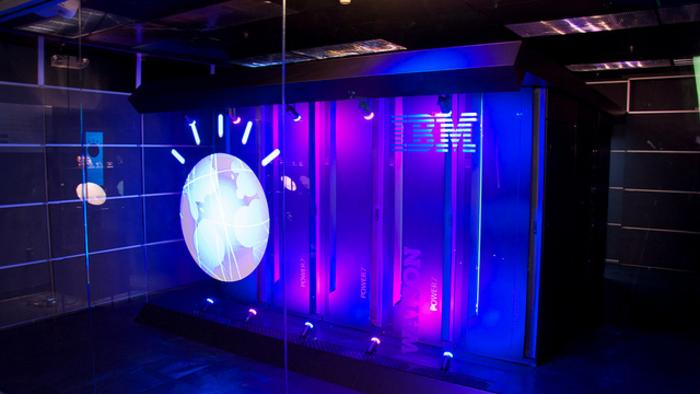

Si le terme d’« intelligence artificielle » (IA) est entré dans le langage commun et son utilisation devenue banale dans les médias, il n’en existe pas réellement de définition partagée.
Au sens large, le terme désigne en effet indistinctement des systèmes qui sont du domaine de la pure science-fiction (les IA dites « fortes », dotées d’une forme conscience d’elles-mêmes) et des systèmes déjà opérationnels en capacité d’exécuter des tâches très complexes (reconnaissance de visage ou de voix, conduite de véhicule – ces systèmes sont qualifiés d’IA « faibles » ou « modérées »).
Cette confusion contribue à entretenir des craintes purement spéculatives (des IA autonomes conscientes s’opposant aux humains) qui resteraient anecdotiques si elles ne troublaient pas la mesure des réels enjeux, tels que l’impact sur les droits fondamentaux de processus de prise de décision fondés sur des modèles mathématiques, et donc difficile l’élaboration de cadres de régulation.
Après avoir connu deux périodes de fort développement (entre 1940 et 1960, puis entre 1980 et 1990), l’IA a connu un nouvel essor en 2010 grâce aux algorithmes dits d’apprentissage automatique. Deux facteurs sont à l’origine de ce nouvel engouement des chercheurs et des industries informatiques : l’accès à des volumes massifs des données et la découverte de la très grande efficacité des processeurs de simples cartes graphiques d’ordinateur pour accélérer le calcul des algorithmes d’apprentissage.
L’actuelle « révolution » de l’IA ne vient donc pas d’une découverte de la recherche fondamentale mais de la possibilité d’exploiter avec efficacité des fondements relativement anciens, tels que l’inférence bayésienne (XVIIIème siècle) ou les neurones formels (1943) pour l’une des sous-classes de l’apprentissage automatique, l’apprentissage profond (ou deep learning).
L’apprentissage automatique a opéré un changement complet de paradigme par rapport à la précédente génération d’IA, les systèmes experts, avec une approche voulue comme inductive : il ne s’agira plus pour un informaticien de coder les règles à la main mais de laisser les ordinateurs les découvrir par corrélation et classification, sur la base d’une quantité massive de données. Autrement dit, l'objectif de l'apprentissage automatique n’est pas réellement d’acquérir des connaissances déjà formalisées mais de comprendre la structure de données et de l’intégrer dans des modèles, notamment pour automatiser des tâches.
Difference IA forte/faible
L’intelligence artificielle forte (IA) est une forme de machine intelligente qui équivaut à l’intelligence humaine.
Les principales caractéristiques de l’IA forte comprennent la capacité de raisonner, de résoudre des énigmes, de porter des jugements, de planifier, d’apprendre et de communiquer. Battre Kasparov aux échecs ne relève pas forcément d’une telle IA forte.
Coder correctement des dispositifs informatiques classiques peut suffire pour cela.
Faire participer des robots humanoïdes à un réseau d’intelligence collective mené par des ingénieurs serait en revanche une autre paire de manche.
Une IA faible, telle que nous la connaissons aujourd’hui sera insuffisante.
Première recherche sur l'intelligence artificielle
1943−1956
 


En 1943, les premiers ordinateurs voient le jour.
En 1945, Zuse un des créateurs des premiers ordinateurs programme les règles de jeu d’échec
En 1949, Shannon, qui fut un promoteur de la théorie de l'information, propose une méthode pour jouer aux échecs.
En 1950, le mathématicien britannique Alan Turing publie, dans le journal philosophique Mind, un article intitulé Computing Machinery and Intelligence. Dans cet article, il décrit un test (Test de Turing).Considéré par beaucoup comme l'un des fondateurs de l'informatique, Turing est également un des précurseurs de l'Intelligence Artificielle.
De 1955 à 1956, Allen Newell, John Shaw, et Herbert Simon créent Logic Theorist, qui est considéré comme le premier programme d'intelligence Artificielle. En effet ce programme permettait de démontrer 38 des 52 théorèmes du manuel scolaire de l'époque appelé « Principa Mathematica ». Pour ce faire, le programme modélisait chaque problème par un arbre, en tentant de le résoudre en sélectionnant la branche qui donnerait le résultat le plus proche de l'objectif final. Le programme était capable de redémontrer des théorèmes déjà établis par les mathématiciens mais de manière plus élégante.IPL-11, le premier langage d'Intelligence artificielle est crée.
En 1956, le terme d'intelligence artificielle (IA) est créé durant la Conférence de Dartmouth par Minsky, McCarthy, Newell, Simon, Shannon et bien d'autres.